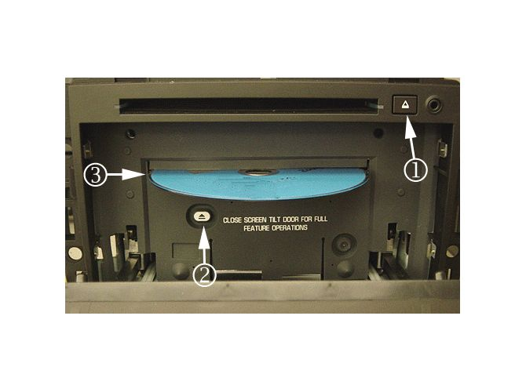

Navigation Radio - Intermittent Blank/Black Screen
TECHNICALBulletin No.: 08-08-44-013F
Date: June 28, 2011
Subject: Navigation Radio Intermittent Blank/Black Screen, Map Disc Read Errors, Features Not Accessible While Driving, Navigation Radio Resets Upon Startup (Update Navigation Radio Software)
Models:
2006-2008 Buick Lucerne
2008 Buick Enclave
2007-2009 Cadillac Escalade Models
2007-2008 Chevrolet Equinox
2007-2008 GMC Acadia
2007-2008 Pontiac Torrent
2007-2008 Saturn OUTLOOK, VUE
All Equipped with Navigation Radio (RPOs U3R, UZR, U3U, UVB)
Attention:
This bulletin applies to vehicles sold in the U.S. and Canada only.
Supercede:
This bulletin is being revised to update model years, correction information and parts information. Please discard Corporate Bulletin Number 08-08-44-013E (Section 08 - Body and Accessories).
Note
If the vehicle has a 2008 MY radio and the software version is 101B or higher (e.g. 101C) for the SuperNav navigation system (Escalades) or 101B or higher (e.g. 101C) for the BlackTie navigation systems (Lucerne, Enclave, Equinox, Acadia, Torrent, Outlook, and VUE), the improvements/corrections offered via update disc 22807647 are already installed and this update is not required. The screen will display the following message "The disc installed is not a MAP DVD". If the vehicle has a 2009 MY radio and the software version is 102C or higher (e.g. 102D) for the SuperNav navigation system (Escalades) the improvements/corrections offered via update disc 22807647 are already installed and this update is not required. The screen will display the following message "The disc installed is not a MAP DVD".
THIS IS NOT AN ERROR MESSAGE.
Condition
Customers may comment on any of the following conditions:
- The Navigation Radio display intermittently goes blank or turns black/off after switching video sources. This most commonly occurs when the shift lever is transitioned from PARK to REVERSE to DRIVE (or vice versa). Other possibilities include switching to DVD movie or Rear AUX (if equipped).
- The Navigation Radio screen may intermittently freeze, lock up or display "MAP DVD Read Error" messages.
- Some features may not be accessible while driving. This includes scrolling lists, address book and navigation related entries (i.e. entering a destination).
- The Navigation Radio, upon startup, will continue to display the vehicle logo repeatedly. This condition occurs when the vehicle language has been changed, using the Driver Information Center (DIC), in the previous ignition cycle.
Cause
These conditions may be caused by software anomalies.
Correction
Technicians are to update the Navigation Radio software using a software update disc, P/N 22807647. The software update disc is to be obtained from the GM Navigation Disc Center, using the contact information below. Follow one of the two procedures below as appropriate for the vehicle you are working on.
Navigation Radio Software Update For Cadillac Escalade Models 2007-2009
Note
If the radio has software calibration 101B (2008 MY radios or earlier) or higher (e.g. 101C, etc.), the software corrections contained on the update disc 22807647 are already installed and this update is not required.
If the radio has software calibration 102C (2009 MY radios) or higher (e.g. 102D, etc.), the software corrections contained on the update disc 22807647 are already installed and this update is not required.
The screen will display the following message "The disc installed is not a MAP DVD". THIS IS NOT AN ERROR MESSAGE. To verify the software version follow steps 1 and 2 below.
Important
For the condition regarding features not accessible while driving, this will only be addressed in 2007 and 2008 model year Cadillac Escalade vehicles.
1. Start the engine, with the gear shift in PARK, wait until the audio or navigation screen is displayed after the opening screen (you may have to press the OK button on the Caution screen).
2. Proceed to the FM audio screen and confirm the current navigation software version by pressing the CONFIG and SEEK UP buttons (1) simultaneously. If the screen switches, select FM to display the software version. Performing this operation may take a couple of attempts for the radio to detect the simultaneous button press. Refer to the illustration above which shows the two buttons that need to be pressed. The navigation software version is the first four characters, reading from the left, located in the middle of the screen.
3. If the navigation software version is 101B (2008 MY or earlier) or 102C or higher, the radio has the latest navigation software available and no update is necessary. However, if the string of letters across the screen are NON-ASCII letters, this indicates an internal communication problem with the RADIO. Refer to the Diagnostic Starting Point-Cellular, Entertainment, and Navigation procedure to begin the diagnosis of the customer concern. For all other navigation software versions proceed to step four to continue the software update.
Important
Do not turn off the power or remove the update disc while the software update is in progress.
Important
This software update procedure will erase the customer's Address and Destination entries from memory.
4. Eject the map disc from the top map DVD slot, callout (2) in the illustration above, if present. Load the software update disc, P/N 22807647, into the top map DVD slot.
5. The display will show "Update in Progress" and upon successful software upgrade, the screen will transition to a blue screen with "The disc installed is not a MAP DVD" displayed on the screen. It will take approximately five minutes to load the new software. Eject the software update disc from the top map DVD slot and retain at your dealership.
6. Confirm that the new navigation software version is either 101B or 102C (depending on the model year) by using the procedure in step two above.
7. Install the customer's original map disc, if it was present. If the customer concern was related to limitations while driving, confirm that the "Limit Features While Driving" feature is turned off by pressing the CONFIG button followed by the Radio tab and "Limit Features While Driving" tab. "Limit Features While Driving" should be unselected to match the customer's preference.
8. Verify proper operation of the Navigation Radio.
Navigation Radio Software Update For All Other Vehicles (2007-2008 Chevrolet Equinox, Pontiac Torrent; 2007-2008 GMC Acadia, Saturn OUTLOOK, Saturn VUE, 2008 Buick Enclave and 2006-2008 Buick Lucerne)
Note
If the radio has software calibration 101B (2008 MY radios or earlier) or higher (e.g. 101C, etc.), the software corrections contained on the update disc 22807647 are already installed and this update is not required. The screen will display the following message "The disc installed is not a MAP DVD" THIS IS NOT AN ERROR MESSAGE. To verify the software version follow step 1 and 2 below.
1. Start the engine, with the gear shift in PARK, wait until the audio or navigation screen is displayed after the opening screen (you may have to press the OK button on the Caution screen).
2. Proceed to the FM audio screen and confirm the current navigation software version by pressing the MENU and SEEK UP (1) buttons simultaneously. If the screen switches, select FM to display the software version. Performing this operation may take a couple of attempts for the radio to detect the simultaneous button press. Refer to the illustration above, which shows the two buttons that need to be pressed. The navigation software version is the first four characters, reading from the left, located in the middle of the screen.
3. If the navigation software version is 101B (2008 MY radios or earlier) or higher, the software corrections contained on the update disc 22807647 are already installed and this update is not required. However, if the string of letters across the screen are NON-ASCII letters, this indicates an internal communication problem with the RADIO. Refer to the Diagnostic Starting Point-Cellular, Entertainment, and Navigation procedure to begin the diagnosis of the customer concern. For all other navigation software versions proceed to step four to continue the software update.
Important
Do not turn off the power or remove the update disc while the software update is in progress.
Important
This software update procedure will erase the customer's Address and Destination entries from memory.

4. Open the front display by pressing and holding the EJECT (1) button for approximately 15 seconds. Eject the map disc from the revealed map DVD slot by pressing the EJECT (2) button located beneath the revealed map DVD slot. Load the software update disc, P/N 22807647, in map drive (3).
5. Close the front display by using both hands at the four corners of the display until the display fits securely into the radio. Do not push on the touch screen to close. The display will show "Update in Progress" and upon successful software update, the screen will transition to a blue screen with "The disc installed is not a MAP DVD" displayed on the screen. It will take approximately five minutes to load the new software.
6. Confirm that the new navigation software version is either 101B or 100F using the procedure in step two above.
7. Verify proper operation of the Navigation Radio.
Parts Information (S/W included on disc)
Navigation software update discs are for the dealer to update the Navigation Radio software only. They DO NOT update or replace the navigation map disc that is supplied with the vehicle. Please order these parts only as needed. There is a limited supply of these discs available. Do not order these discs for stock. Do not give the software update disc to the customer. Navigation software discs may be used to reprogram more than one vehicle. The first update disc for each P/N is free. Subsequent copies of the same P/N for the same dealer will cost $50 (USD). Refer to Corporate Bulletin Number 06-08-44-012C for additional information on how to obtain AVN software update discs.
GM Navigation Disc Center Contact Information
Note
Navigation Radio Software Update Discs are no longer available on the Web. They can only be ordered by calling the following phone number:
GM Navigation Disc Center at 1-877-NAV-DISC (1-877-628-3472)
Warranty Information
For vehicles repaired under warranty, use the table.

Disclaimer